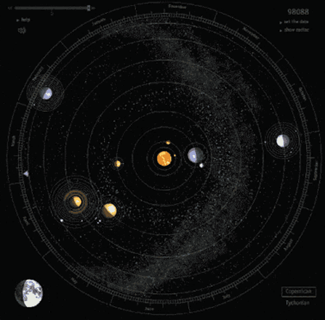

El sistema solar es un sistema planetario. Un sistema planetario está constituido por una estrella (o en ocasiones un conjunto de estrellas) y los cuerpos celestes que giran a su alrededor, es decir, que se encuentran bajo la influencia de su campo gravitatorio, ya se trate de planetas con sus respectivas lunas, planetas menores, asteroides, cometas, o polvo estelar.

¿Cuáles son las partes del sistema solar?
La mayor parte del sistema solar, al igual que sucede con el resto de sistemas planetarios, es espacio vacío. Sin embargo, alrededor de todo ese espacio existen multitud de objetos influenciados por la gravedad del Sol, los cuales componen el sistema solar.
Como no podía ser de otra manera, el Sol es la parte más importante del sistema solar. Se encuentra en su centro, y todos los objetos del sistema solar están influenciados por su gravedad. Se trata de una estrella de tipo G, también conocidas como enanas amarillas, que se encuentra aproximadamente en la mitad de su vida, a día de hoy de unos 4.600 millones de años. El sol está formado por tres cuartas partes de hidrógeno y una de helio, gira sobre su propio eje, alrededor del cual tarda 25 días en dar una vuelta, y por si mismo representa aproximadamente del 99,86 % de la masa total del sistema solar.
Por su tamaño, los siguientes objetos más importantes del sistema solar son los planetas, los cuales podemos dividir en dos clases diferentes. Así, ocupando las orbitas internas del sistema solar se encuentran Mercurio, Venus, La Tierra y Marte. Se trata de los planetas de menor tamaño, por su posición en el sistema solar conocidos como planetas interiores y por su naturaleza sólida de roca y metal también denominados planetas rocosos. Por contrapartida, en las órbitas más externas del sistema solar encontraremos los planetas exteriores, mucho más grandes y compuestos por gas, motivo por el que son denominados como gigantes gaseosos y gigantes de hielo. Así, en orden a su distancia del Sol encontramos a Júpiter, Saturno, Urano y Neptuno.